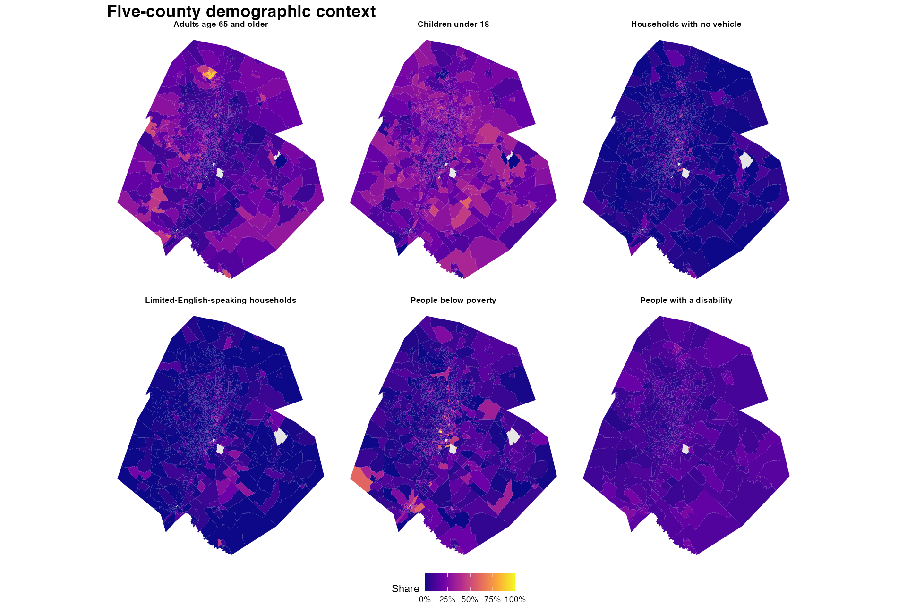
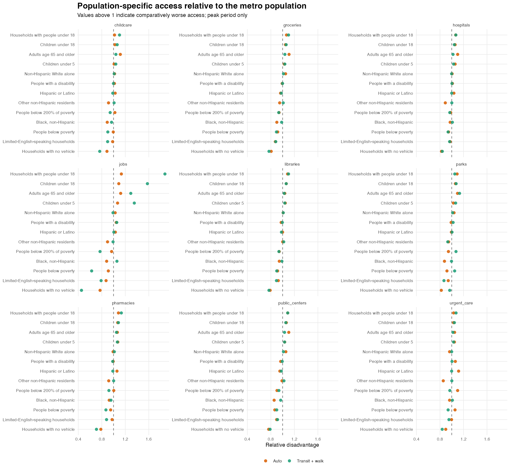

Scope: five-county Austin metro and City of Austin; AM peak auto and transit + walk only.
ACS 2024 five-year block-group estimates. The maps show published block-group geography; H3 counts are modeled allocations used for summaries.

Relative disadvantage compares each group with the metro population (or all households for household groups). Travel-time ratios above one mean longer capped travel time. For jobs and park acreage, the ratio is inverted so values above one consistently indicate worse access.

Minutes are capped at 60 for auto and 90 for transit + walk when the required destination is unreachable. Park acreage includes peak results for both modes at 10, 15, and 30 minutes. Job access retains 15 and 30 minutes for auto and 30 and 60 minutes for transit plus walk.
| destination | mode | group_label | reachable_share | mean_access | p50_access | p90_access | mean_difference_from_reference |
|---|---|---|---|---|---|---|---|
| childcare | Auto | Total population | 100.0% | 6.3 | 5.2 | 10.9 | 0.0 |
| childcare | Auto | Adults age 65 and older | 100.0% | 7.0 | 5.8 | 12.7 | 0.7 |
| childcare | Auto | People below poverty | 100.0% | 6.3 | 5.2 | 10.7 | 0.0 |
| childcare | Auto | People with a disability | 100.0% | 6.4 | 5.3 | 11.4 | 0.1 |
| childcare | Auto | Households with no vehicle | 100.0% | 5.5 | 4.5 | 8.5 | -0.7 |
| childcare | Transit + walk | Total population | 33.6% | 69.9 | 90.0 | 90.0 | 0.0 |
| childcare | Transit + walk | Adults age 65 and older | 28.8% | 72.7 | 90.0 | 90.0 | 2.8 |
| childcare | Transit + walk | People below poverty | 44.2% | 63.1 | 90.0 | 90.0 | -6.8 |
| childcare | Transit + walk | People with a disability | 33.8% | 69.8 | 90.0 | 90.0 | -0.1 |
| childcare | Transit + walk | Households with no vehicle | 61.8% | 51.2 | 34.0 | 90.0 | -15.7 |
| groceries | Auto | Total population | 100.0% | 8.6 | 7.6 | 14.4 | 0.0 |
| groceries | Auto | Adults age 65 and older | 100.0% | 9.6 | 8.1 | 16.8 | 0.9 |
| groceries | Auto | People below poverty | 100.0% | 7.9 | 6.9 | 13.2 | -0.7 |
| groceries | Auto | People with a disability | 100.0% | 8.6 | 7.4 | 14.6 | -0.1 |
| groceries | Auto | Households with no vehicle | 100.0% | 6.7 | 5.8 | 10.7 | -1.6 |
| groceries | Transit + walk | Total population | 30.9% | 72.9 | 90.0 | 90.0 | 0.0 |
| groceries | Transit + walk | Adults age 65 and older | 26.3% | 75.7 | 90.0 | 90.0 | 2.8 |
| groceries | Transit + walk | People below poverty | 42.3% | 65.2 | 90.0 | 90.0 | -7.7 |
| groceries | Transit + walk | People with a disability | 31.1% | 72.8 | 90.0 | 90.0 | -0.1 |
| groceries | Transit + walk | Households with no vehicle | 59.7% | 53.7 | 39.0 | 90.0 | -16.2 |
| hospitals | Auto | Total population | 100.0% | 14.6 | 12.5 | 27.1 | 0.0 |
| hospitals | Auto | Adults age 65 and older | 100.0% | 16.1 | 13.5 | 28.9 | 1.5 |
| hospitals | Auto | People below poverty | 100.0% | 13.8 | 11.8 | 26.1 | -0.8 |
| hospitals | Auto | People with a disability | 100.0% | 14.8 | 12.5 | 27.5 | 0.2 |
| hospitals | Auto | Households with no vehicle | 100.0% | 11.6 | 10.2 | 20.9 | -2.5 |
| hospitals | Transit + walk | Total population | 29.1% | 78.5 | 90.0 | 90.0 | 0.0 |
| hospitals | Transit + walk | Adults age 65 and older | 24.9% | 80.2 | 90.0 | 90.0 | 1.7 |
| hospitals | Transit + walk | People below poverty | 39.9% | 73.7 | 90.0 | 90.0 | -4.9 |
| hospitals | Transit + walk | People with a disability | 29.4% | 78.8 | 90.0 | 90.0 | 0.3 |
| hospitals | Transit + walk | Households with no vehicle | 58.0% | 64.0 | 64.0 | 90.0 | -12.2 |
| libraries | Auto | Total population | 100.0% | 9.1 | 8.4 | 15.7 | 0.0 |
| libraries | Auto | Adults age 65 and older | 100.0% | 9.5 | 8.6 | 16.5 | 0.3 |
| libraries | Auto | People below poverty | 100.0% | 8.4 | 7.5 | 14.8 | -0.8 |
| libraries | Auto | People with a disability | 100.0% | 8.9 | 8.2 | 15.5 | -0.2 |
| libraries | Auto | Households with no vehicle | 100.0% | 6.9 | 6.4 | 12.6 | -1.9 |
| libraries | Transit + walk | Total population | 32.4% | 71.8 | 90.0 | 90.0 | 0.0 |
| libraries | Transit + walk | Adults age 65 and older | 28.3% | 73.8 | 90.0 | 90.0 | 2.0 |
| libraries | Transit + walk | People below poverty | 43.5% | 64.6 | 90.0 | 90.0 | -7.2 |
| libraries | Transit + walk | People with a disability | 33.0% | 71.4 | 90.0 | 90.0 | -0.3 |
| libraries | Transit + walk | Households with no vehicle | 60.8% | 52.8 | 40.0 | 90.0 | -16.0 |
| pharmacies | Auto | Total population | 100.0% | 5.5 | 4.7 | 10.5 | 0.0 |
| pharmacies | Auto | Adults age 65 and older | 100.0% | 5.9 | 4.9 | 11.2 | 0.4 |
| pharmacies | Auto | People below poverty | 100.0% | 5.3 | 4.3 | 10.6 | -0.3 |
| pharmacies | Auto | People with a disability | 100.0% | 5.5 | 4.6 | 10.6 | 0.0 |
| pharmacies | Auto | Households with no vehicle | 100.0% | 4.1 | 3.8 | 7.9 | -1.1 |
| pharmacies | Transit + walk | Total population | 40.2% | 62.3 | 90.0 | 90.0 | 0.0 |
| pharmacies | Transit + walk | Adults age 65 and older | 35.6% | 65.4 | 90.0 | 90.0 | 3.1 |
| pharmacies | Transit + walk | People below poverty | 51.3% | 54.2 | 52.0 | 90.0 | -8.1 |
| pharmacies | Transit + walk | People with a disability | 41.4% | 61.4 | 90.0 | 90.0 | -0.9 |
| pharmacies | Transit + walk | Households with no vehicle | 67.7% | 41.9 | 24.0 | 90.0 | -17.1 |
| public_centers | Auto | Total population | 100.0% | 10.5 | 9.5 | 18.6 | 0.0 |
| public_centers | Auto | Adults age 65 and older | 100.0% | 11.6 | 10.3 | 20.6 | 1.1 |
| public_centers | Auto | People below poverty | 100.0% | 9.1 | 8.0 | 16.9 | -1.4 |
| public_centers | Auto | People with a disability | 100.0% | 10.1 | 9.0 | 18.4 | -0.3 |
| public_centers | Auto | Households with no vehicle | 100.0% | 7.7 | 6.8 | 13.5 | -2.4 |
| public_centers | Transit + walk | Total population | 30.4% | 74.6 | 90.0 | 90.0 | 0.0 |
| public_centers | Transit + walk | Adults age 65 and older | 26.3% | 77.0 | 90.0 | 90.0 | 2.4 |
| public_centers | Transit + walk | People below poverty | 41.2% | 67.1 | 90.0 | 90.0 | -7.5 |
| public_centers | Transit + walk | People with a disability | 31.0% | 74.1 | 90.0 | 90.0 | -0.5 |
| public_centers | Transit + walk | Households with no vehicle | 59.3% | 56.8 | 51.0 | 90.0 | -15.4 |
| urgent_care | Auto | Total population | 100.0% | 15.7 | 12.7 | 29.6 | 0.0 |
| urgent_care | Auto | Adults age 65 and older | 100.0% | 16.5 | 13.0 | 31.7 | 0.8 |
| urgent_care | Auto | People below poverty | 100.0% | 16.6 | 13.0 | 32.0 | 0.9 |
| urgent_care | Auto | People with a disability | 100.0% | 16.7 | 13.2 | 31.3 | 1.0 |
| urgent_care | Auto | Households with no vehicle | 100.0% | 13.6 | 11.2 | 27.9 | -1.5 |
| urgent_care | Transit + walk | Total population | 28.5% | 78.4 | 90.0 | 90.0 | 0.0 |
| urgent_care | Transit + walk | Adults age 65 and older | 24.6% | 80.0 | 90.0 | 90.0 | 1.7 |
| urgent_care | Transit + walk | People below poverty | 39.4% | 73.6 | 90.0 | 90.0 | -4.8 |
| urgent_care | Transit + walk | People with a disability | 28.6% | 78.8 | 90.0 | 90.0 | 0.4 |
| urgent_care | Transit + walk | Households with no vehicle | 58.4% | 63.7 | 61.0 | 90.0 | -12.3 |
Retained share compares the five-county ACS total with the amount allocated to H3 origins in the metro grid. Allocation weights are normalized within each source geography across matched H3 origins, preserving source totals; this does not establish within-cell accuracy.
| Group | ACS total | Allocated total | Retained share |
|---|---|---|---|
| Total population | 2426592 | 2426592 | 100.0% |
| Children under 5 | 140566 | 140566 | 100.0% |
| Children under 18 | 529257 | 529257 | 100.0% |
| Adults age 65 and older | 289823 | 289823 | 100.0% |
| People below poverty | 233722 | 233722 | 100.0% |
| People below 200% of poverty | 522317 | 522317 | 100.0% |
| People with a disability | 248806 | 248806 | 100.0% |
| Non-Hispanic White alone | 1181838 | 1181838 | 100.0% |
| People of color | 1244754 | 1244754 | 100.0% |
| Black, non-Hispanic | 167987 | 167987 | 100.0% |
| Other non-Hispanic residents | 295584 | 295584 | 100.0% |
| Hispanic or Latino | 781183 | 781183 | 100.0% |
| Households with no vehicle | 48020 | 48020 | 100.0% |
| Limited-English-speaking households | 41889 | 41889 | 100.0% |
| All households | 989434 | 989434 | 100.0% |
| Households with people under 18 | 296837 | 296837 | 100.0% |
tables/group_access_summary.csvtables/peak_scenario_inventory.csvspatial/block_group_demographics.gpkgspatial/h8_population_counts.csv